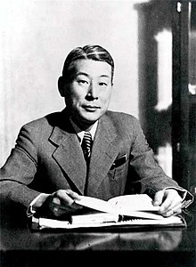

Chiune Sugihara was a Japanese diplomat who served as vice-consul for the Japanese Empire in Kaunas, Lithuania. During the Second World War, Sugihara helped thousands of Jews flee Europe by issuing transit visas to them so that they could travel through Japanese territory, risking his job and the lives of his family. The fleeing Jews were refugees from German-occupied Western Poland and Soviet-occupied Eastern Poland, as well as residents of Lithuania. In 1985, the State of Israel honored Sugihara as one of the Righteous Among the Nations for his actions. He is the only Japanese national to have been so honored. In Lithuania, 2020 was "The Year of Chiune Sugihara". It has been estimated as many as 100,000 people alive today are the descendants of the recipients of Sugihara visas.
